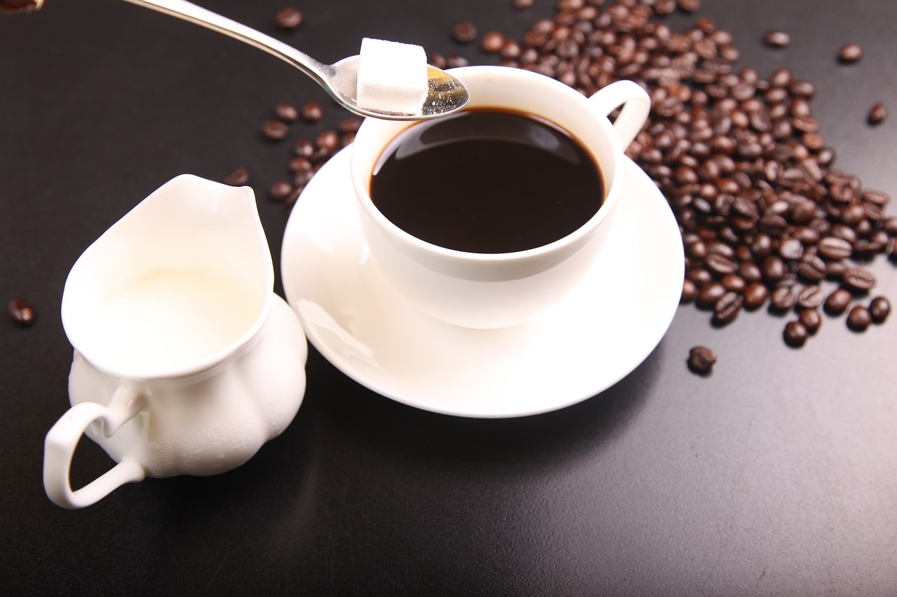
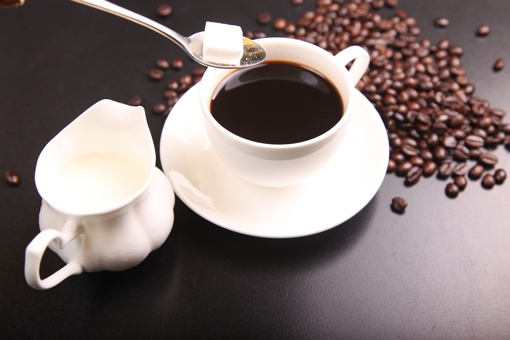

Proceso de recoleccion del Cafe
La recolección del café es un momento mágico. Se seleccionan frutos maduros, llamados cerezas, que contienen las preciadas semillas. La cosecha se hace manual o mecánicamente, dependiendo de la región y variedad. Los agricultores recogen los frutos en el momento perfecto, cuando están listos para ser procesados. La recolección cuidadosa es clave para la calidad y sabor del café. Un trabajo delicado que requiere paciencia y dedicación. La base de un café excepcional comienza aquí.

 

proceso de tostado del Cafe
El tostado del café es un arte que transforma las semillas en un tesoro de sabores. Se calientan a 200-250°C, liberando aromas y matices únicos. El proceso puede ser ligero, medio u oscuro, dependiendo del tiempo y técnica. Desde 10 hasta 30 minutos, la semilla se transforma, caramelizando sus azúcares y realzando su esencia. Un tostado perfecto requiere equilibrio y precisión. El resultado: un café intenso, complejo y delicioso, listo para ser disfrutado.